ログ解析
「ログ解析」タブをクリックするとログ解析画面が表示されます。
ログの集計、解析を行い、その結果を表示またはダウンロードすることができます。
管理画面にて除外対象に設定されているアドレスなどを除いて集計されます。
また、30秒以内に同一ユーザが同じ操作をした場合、集計から除外されます。
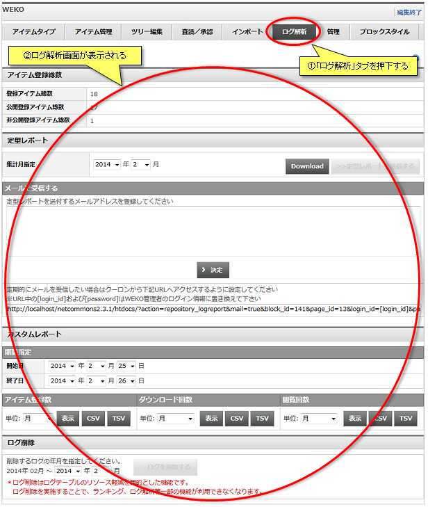
ログの集計、解析を行い、その結果を表示またはダウンロードすることができます。
管理画面にて除外対象に設定されているアドレスなどを除いて集計されます。
また、30秒以内に同一ユーザが同じ操作をした場合、集計から除外されます。
アイテム登録総数
WEKOに登録されたアイテムの総数を表示します。
登録アイテム総数、公開登録アイテム総数、非公開登録アイテム総数が表示されます。
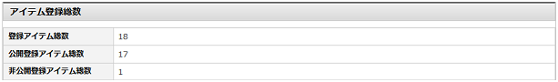
登録アイテム総数、公開登録アイテム総数、非公開登録アイテム総数が表示されます。
定型レポート
指定した期間の定型レポートをTSV(タブ区切りテキスト)形式でダウンロードすることができます。
定型レポートは下記10種類です。
集計年月をセレクトボックスから指定し、「Download」リンクをクリックします。
「Download」リンクをクリックするとファイル保存ダイアログが起動し、定形レポートをダウンロードすることができます。
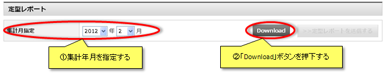
【注意事項】
定型レポートは下記10種類です。
| ファイル名 | ログ内容 |
|---|---|
| logReport_IndexAccess_YYYYMM.tsv | 各インデックスに所属するアイテムのアイテム詳細画面アクセス数を表示します インデックス名はツリー構造を¥区切りで表示します 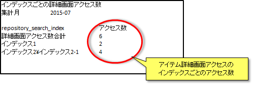 |
| logReport_PayPerView_YYYYMM.tsv |
課金およびオープンアクセスファイルのダウンロード数を表示します また、NetCommonsの各グループ毎のファイルダウンロード数を表示します 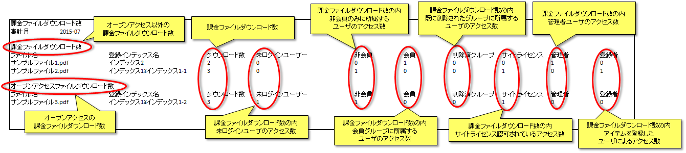 |
| logReport_SearchCount_YYYYMM.tsv |
各検索キーワードの検索回数を表示します 下記にあたる詳細カテゴリーの検索キーワードのみを表示します
|
| logReport_SiteAccess_YYYYMM.tsv |
サイトライセンスを設定しているホストまたはユーザとサイトライセンス以外からの下記アクセス数を表示します
|
| logReport_SuppleAccess_YYYYMM.tsv |
サプリメンタルコンテンツアクセス数およびダウンロード数を表示します 本レポートに記載されているサプリメンタルコンテンツの詳細画面アクセス数およびダウンロード数はサプリWEKOでのアイテム詳細画面アクセス数とダウンロード数となります 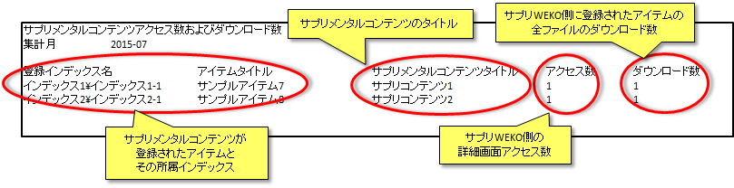 |
| logReport_DetailView_YYYYMM.tsv |
アイテム詳細画面のアクセス数を表示します また、NetCommonsの各グループ毎のアイテム詳細画面のアクセス数を表示します 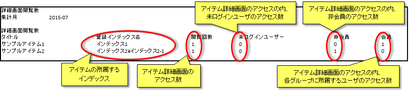 |
| logReport_FileView_YYYYMM.tsv |
オープンアクセスおよびオープンアクセスでないファイルのダウンロード数をインデックスごとに表示します また、ユーザの所属グループ、未ログイン、管理者およびアイテムの登録者毎のダウンロード数の内訳を表示します 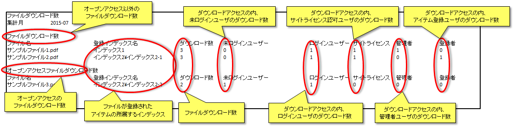 |
| logReport_FileViewPerUser_YYYYMM.tsv |
ユーザー別のダウンロード数を表示します また、各ユーザのログインID、ハンドル名、会員氏名、NC2の権限、所属している全グループも表示します 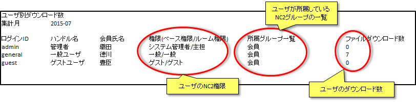 |
| logReport_HostAccess_YYYYMM.tsv | ホスト別のトップページアクセス数を表示します 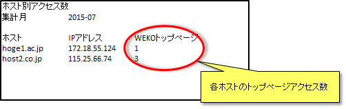 |
| logReport_UserAffiliate_YYYYMM.tsv |
権限別の登録ユーザ数を表示します また、研究会(NetCommonsのグループ)に所属しているユーザを表示します 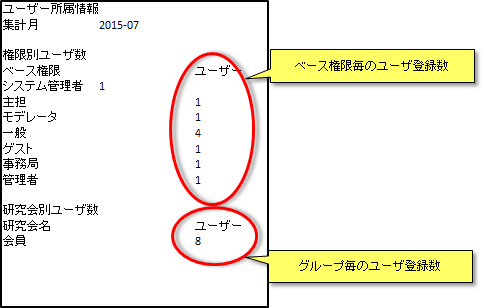 |
集計年月をセレクトボックスから指定し、「Download」リンクをクリックします。
「Download」リンクをクリックするとファイル保存ダイアログが起動し、定形レポートをダウンロードすることができます。
【注意事項】
- 定型レポートでダウンロードできるファイルは、10種類のTSV(タブ区切りテキスト)形式ファイルを圧縮したZIPアーカイブとなります。
定型レポート メール送信
指定した期間の定型レポートを登録したメールアドレスで受信することができます。
定型レポートを受け取るメールアドレスを入力し、「決定」ボタンをクリックします。
「>>定型レポートを送信する」ボタンをクリックすると登録したメールアドレスへ定型レポートが送信されます。
定期的にメールを受信する場合、
図中のURLから[login_id]および[password]をWEKO管理者のログイン情報に置き換えた上で、クーロンから指定されたURLへアクセスするように設定します。
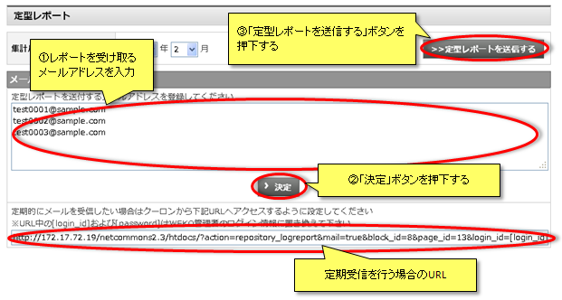
定型レポートを受け取るメールアドレスを入力し、「決定」ボタンをクリックします。
「>>定型レポートを送信する」ボタンをクリックすると登録したメールアドレスへ定型レポートが送信されます。
定期的にメールを受信する場合、
図中のURLから[login_id]および[password]をWEKO管理者のログイン情報に置き換えた上で、クーロンから指定されたURLへアクセスするように設定します。
カスタムレポート
下記3種類のデータを指定した期間のログから集計することができます。
また、集計データを「日」「週」「月」「年」「アイテム」「ホスト」ごとに区切ったヒストグラムで表示またはダウンロードすることができます。
セレクトボックスから集計期間および集計単位を選択し、「表示」ボタンを押下すると集計対象データのヒストグラムが表示されます。
「印刷」ボタンを押下すると印刷プレビュー画面が別ウィンドウに表示されます。
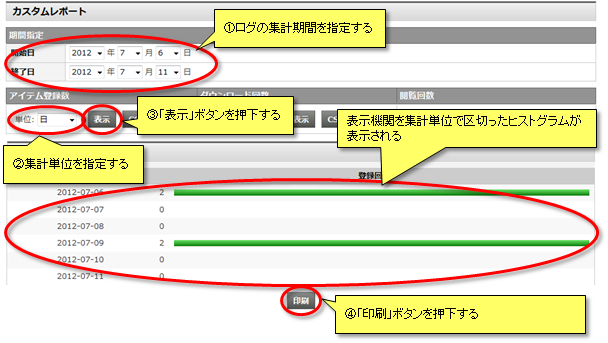
セレクトボックスから集計期間および集計単位を選択し、「CSV」および「TSV」ボタンを押下するとファイル保存ダイアログが起動し、集計結果をCSV(カンマ区切りテキスト)またはTSV(タブ区切りテキスト)形式でダウンロードできます。
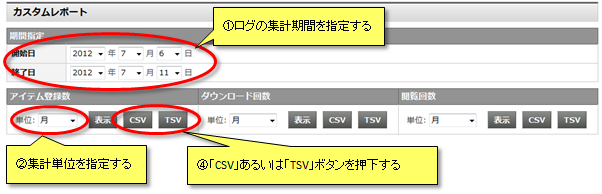
ダウンロード回数および閲覧回数にて、単位に「ホスト」を指定して表示すると下記のようになります
解析から除外したいアクセスを選択することができます。
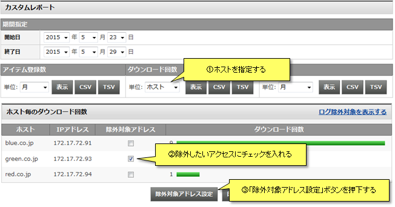
【注意事項】
解析から除外したいアクセスを設定した後、管理画面にてログ削除の実行を実施する必要があります。
実行方法についてはWEKO管理をご覧ください。
また、集計データを「日」「週」「月」「年」「アイテム」「ホスト」ごとに区切ったヒストグラムで表示またはダウンロードすることができます。
| 名称 | ログ内容 |
|---|---|
| アイテム登録数 | 期間中に登録されたアイテムの数 |
| ダウンロード回数 | 期間中にダウンロードされたアイテムの数 |
| 閲覧回数 | 期間中に閲覧されたアイテムの数 |
セレクトボックスから集計期間および集計単位を選択し、「表示」ボタンを押下すると集計対象データのヒストグラムが表示されます。
「印刷」ボタンを押下すると印刷プレビュー画面が別ウィンドウに表示されます。
セレクトボックスから集計期間および集計単位を選択し、「CSV」および「TSV」ボタンを押下するとファイル保存ダイアログが起動し、集計結果をCSV(カンマ区切りテキスト)またはTSV(タブ区切りテキスト)形式でダウンロードできます。
ダウンロード回数および閲覧回数にて、単位に「ホスト」を指定して表示すると下記のようになります
解析から除外したいアクセスを選択することができます。
【注意事項】
解析から除外したいアクセスを設定した後、管理画面にてログ削除の実行を実施する必要があります。
実行方法についてはWEKO管理をご覧ください。
ログ削除
指定した期間のログを削除することができます。
WEKOの可動年月から現在の一月前までのログを対象に指定する事ができます。
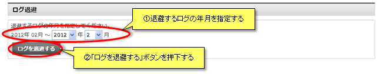
WEKOの可動年月から現在の一月前までのログを対象に指定する事ができます。